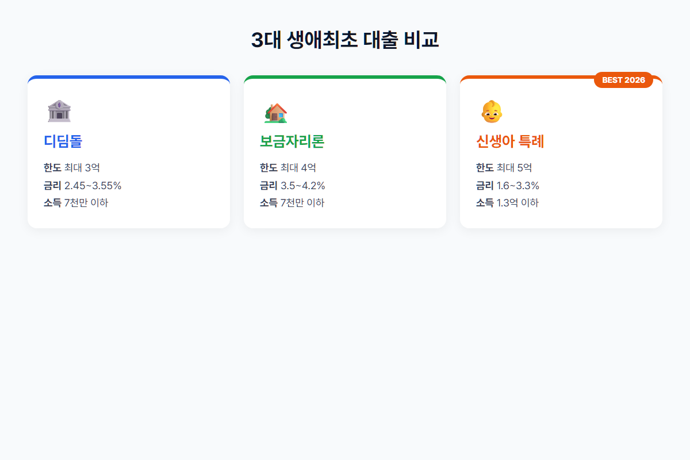
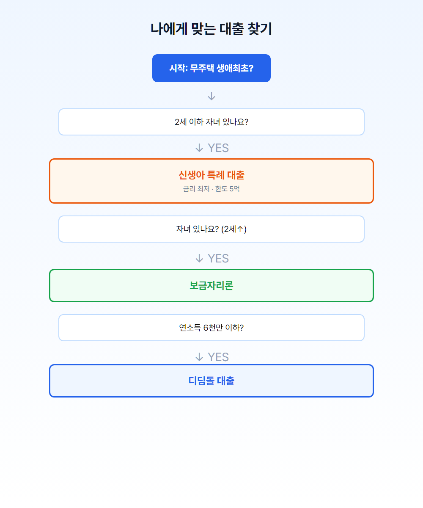
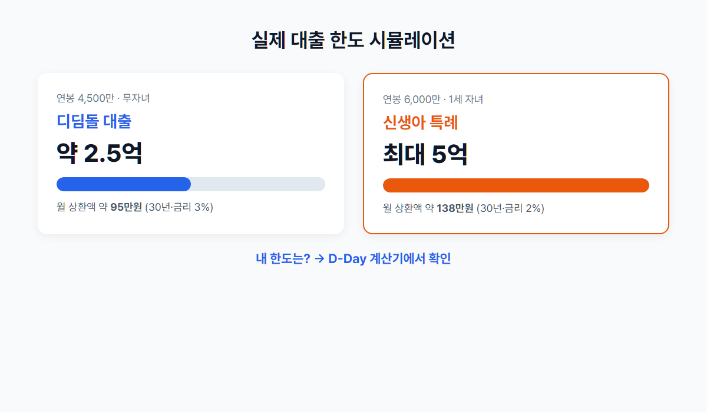
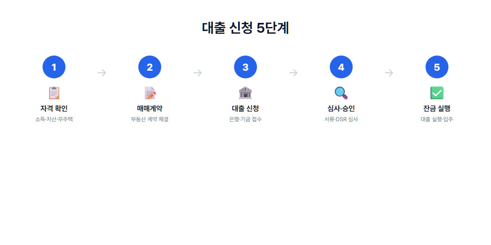

2026년 생애최초 주택구입 대출 완벽 가이드 - 디딤돌·보금자리·신생아특례 한 번에 정리
무주택 첫 구입자를 위한 정부 지원 대출 비교와 실전 신청 가이드
"내 집 마련, 어디서부터 시작해야 할까?" 첫 집을 사려고 알아보면 은행 상품, 정부 지원, 청약, 세금 혜택까지 정보가 한꺼번에 쏟아집니다. 그중에서도 생애최초 주택 구입자에게는 일반 대출보다 훨씬 유리한 정부·공공 대출이 열려 있습니다. 2026년에는 신생아 특례 한도 확대와 DSR(총부채원리금상환비율) 강화가 동시에 적용되고 있어, 어떤 대출을 고르느냐가 실질 부담을 크게 좌우합니다. 이 글을 읽으시면 ① 세 가지 핵심 대출의 차이, ② 내 상황별 추천 상품, ③ 실제 한도 계산과 매물 찾기 방법까지 한 번에 정리됩니다.
생애최초 대출이란?
생애최초 주택 구입자란 세대 전원이 주택을 소유한 이력이 없는 무주택 세대가, 인생 처음으로 주택을 구입할 때 받을 수 있는 각종 금융·세제 혜택을 말합니다. 은행 주택담보대출보다 LTV(담보인정비율)가 높고, 정부·공공기금 상품은 금리가 낮으며, 취득세·중개보수 등에서도 추가 혜택이 붙는 경우가 많습니다.
| 구분 | 일반 주담대 | 생애최초 대출 |
|---|---|---|
| LTV | 최대 70% 전후 | 최대 80% (상품별 상이) |
| 금리 | 시중 4~5%대 | 1.6~4.2% (정책상품) |
| DTI·DSR | 엄격 적용 | 일부 우대·완화 |
| 취득세 | 일반 세율 | 감면 가능 (지역·가격 조건) |
첫 집이라면 시중은행 상품부터 보기보다 디딤돌·보금자리·신생아 특례 등 공공 지원 상품을 먼저 비교하는 것이 이자 부담을 수억 원 단위로 줄일 수 있습니다. 무주택 요건을 충족한다면, 가능한 한 정책 대출을 최우선으로 검토하시길 권합니다.
3대 대출 상품 비교

디딤돌 대출
국토교통부 주택도시기금이 운영하는 대표적인 서민·실수요자 주택 구입 대출입니다. 부부합산 연소득 6,000만 원 이하가 기준이며, 생애최초 구입자는 7,000만 원까지 완화됩니다. 대출 한도는 일반 최대 2.5억 원, 생애최초는 3억 원까지 가능하고, 금리는 소득·우대 조건에 따라 연 2.45~3.55% 수준입니다. 대상 주택 가격은 일반 5억 원 이하, 수도권은 6억 원 이하가 원칙입니다.
보금자리론
한국주택금융공사(HF)가 보증하는 장기·고정금리 주택담보대출로, 금리 변동 부담이 적습니다. 부부합산 연소득 7,000만 원 이하(신혼부부 8,500만 원)가 자격 기준이며, 한도는 최대 4억 원입니다. 금리는 보통 연 3.5~4.2%이고, 주택 가격 6억 원 이하 매물에 주로 활용됩니다. 디딤돌보다 소득·가격 상한이 넉넉하지만 금리는 다소 높은 편입니다.
신생아 특례 대출 ★ 2026년 핵심
2세 이하 자녀가 있는 가구(출산·입양 포함)를 위한 초저금리 대출로, 2026년 한도가 최대 5억 원까지 확대되었습니다. 금리는 연 1.6~3.3%로 세 상품 중 가장 낮고, 부부합산 연소득 1.3억 원 이하, 주택 가격 9억 원 이하까지 적용됩니다. 자녀가 있다면 다른 상품과 비교할 때 압도적으로 유리한 경우가 많습니다. 신생아 특례 상세 가이드에서 대환·버팀목 내용도 확인해 보세요.
내 상황별 추천 대출

- 연소득 5,000만 원 + 무자녀 → 디딤돌 대출이 가장 현실적입니다. 금리·한도 모두 서민 실수요에 맞춰져 있습니다.
- 연소득 7,000만 원 + 자녀(2세 이상) → 소득 상한이 넉넉한 보금자리론을 검토하세요.
- 2세 이하 자녀(신생아·영유아) → 조건만 맞다면 신생아 특례가 금리·한도 모두 최우선입니다.
- 결혼 예정·신혼 → 신혼부부 특화 우대금리가 붙는 보금자리·디딤돌 변형 상품을 함께 비교하세요.
실제 한도 계산 예시

예시 1: 연봉 4,500만 원 직장인 (디딤돌)
2026년 기준 DSR 40%를 적용하면, 기존 대출이 없을 때 월 상환 가능액은 약 150만 원 전후입니다. 금리 3%, 만기 30년, 원리금균등 상환을 가정하면 실질 대출 가능액은 약 2.5억 원 수준입니다. 디딤돌 생애최초 한도 3억 원과 비교했을 때 DSR이 먼저 한도를 제한하는 경우가 많으니, 반드시 DSR 시뮬레이션을 병행하세요.
예시 2: 연봉 6,000만 원 + 1세 자녀 (신생아 특례)
같은 DSR 40%라도 금리가 2%대이면 같은 소득으로 더 많은 원금을 빌릴 수 있습니다. 신생아 특례는 상품 한도 5억 원까지 가능하지만, 실제 실행액은 소득·담보가치·DSR에 따라 달라집니다. 월 상환액 기준으로 디딤돌 3% 대비 신생아 특례 2%는 수십만 원 차이가 날 수 있어, 장기 총이자 절감 효과가 큽니다.
대출 가능 매물 찾기
대출 한도가 정해지면 그다음은 "이 돈으로 어디 집을 살 수 있나?"입니다. 중개사 호가보다 실거래가를 기준으로 봐야 합니다. 같은 아파트라도 평형·층·거래 시점에 따라 가격 차이가 크기 때문입니다. 지역별로 단지 단위 실거래 추이를 비교하고, 예산에 맞는 평형대 분포를 확인하면 헛걸음을 줄일 수 있습니다.
승박 실거래가 지도에서는 서울·경기·인천 등 주요 지역 아파트 실거래를 지도에서 바로 확인할 수 있고, 평형별 가격 차트와 최근 거래 내역도 함께 볼 수 있습니다.
신청 절차 5단계

- 사전 자격 확인 — 무주택 여부, 소득·자산, 주택 가격 상한을 주택도시기금·HF 공식 사이트에서 자가진단합니다.
- 부동산 매매계약 — 가계약 전 대출 가능 여부를 은행에 사전 상담하면 잔금일 지연을 줄일 수 있습니다.
- 대출 신청 — 취급 은행(국민·신한·우리·농협·하나 등)에 서류를 제출합니다.
- 심사 및 승인 — DSR·담보평가·서류 심사 후 승인 통보를 받습니다.
- 잔금 지급 — 대출 실행과 동시에 잔금이 지급되며, 이후 등기·입주 절차를 진행합니다.
자주 묻는 질문
Q1. 생애최초인데 분양받았다가 포기했어요. 가능한가요?
분양 계약만 하고 실제 소유권 이전(등기)이 없었다면 무주택으로 인정되는 경우가 많습니다. 다만 청약 당첨·계약 이력에 따라 예외가 있으므로, 대출 신청 전 주택소유 여부 조회로 반드시 확인하세요.
Q2. 부모님 명의 주택에 거주 중인데 무주택인가요?
본인 및 배우자 명의로 등기된 주택이 없다면 무주택 세대로 보는 것이 일반적입니다. 부모님 집에 거주하는 것만으로는 유주택이 되지 않습니다.
Q3. 청약통장 해지하고 대출받아도 되나요?
대출 실행과 청약통장 유지는 별개입니다. 다만 청년 주택드림 통장 등 정부 지원 상품은 해지 시 혜택이 사라질 수 있으니, 청약통장 가이드와 함께 비교 후 결정하세요.
Q4. 부부 한 명만 신청 가능한가요?
주택 구입 대출은 보통 부부 공동명의·공동채무가 원칙입니다. 일부 상품은 신청인 1인 기준이지만, 배우자 소득·부채가 DSR에 합산됩니다.
Q5. 대출 실행 후 다른 집으로 갈아탈 수 있나요?
생애최초 혜택은 최초 1회가 원칙입니다. 대출 후 다른 주택으로 이사하며 추가 혜택을 받기는 어렵고, 신생아 특례의 대환 등 일부 예외만 별도 검토가 가능합니다.
마무리
핵심만 세 줄로 정리합니다. ① 생애최초라면 시중은행보다 디딤돌·보금자리·신생아 특례를 먼저 비교하세요. ② 자녀가 있다면 신생아 특례가 금리·한도 모두 유리한 경우가 많습니다. ③ 한도를 정한 뒤에는 실거래가로 예산에 맞는 매물을 찾는 것이 다음 단계입니다.
급여 계산기로 소득을 확인하고, D-Day 계산기로 목표 시점을 잡고, 실거래가 지도에서 매물을 고르세요. 청약 준비가 필요하다면 청년 주택드림 통장 가이드도 함께 참고하시면 좋습니다.
본 글은 2026년 6월 기준 일반 정보이며, 정확한 자격·한도·금리는 주택도시기금·HF공사 또는 취급 은행에서 최종 확인하시기 바랍니다. 대출 조건은 개인 신용·소득·담보에 따라 달라질 수 있으며, 본 글은 대출 가입을 권유하지 않습니다.